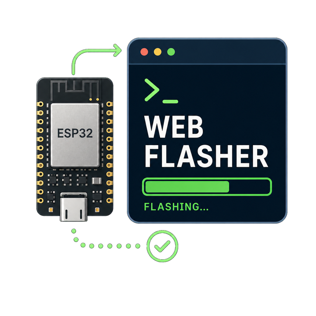
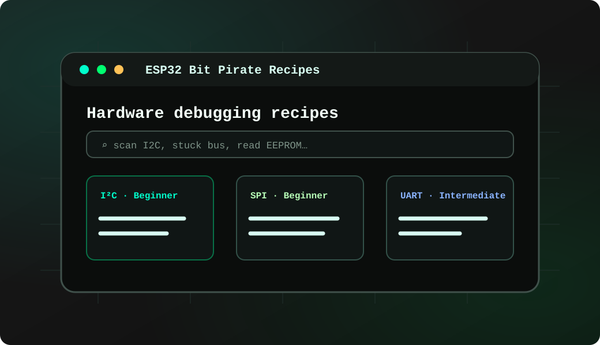
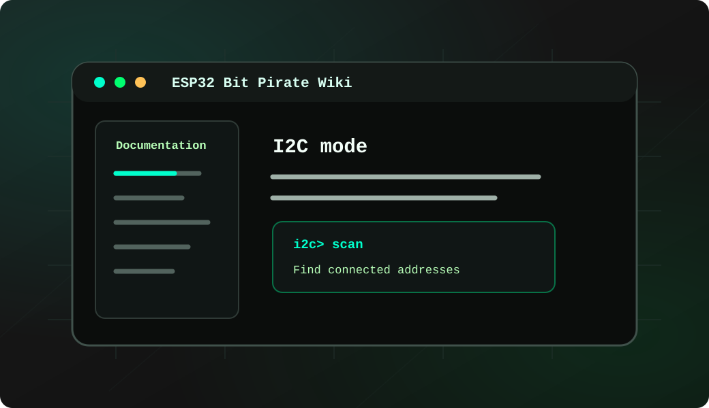
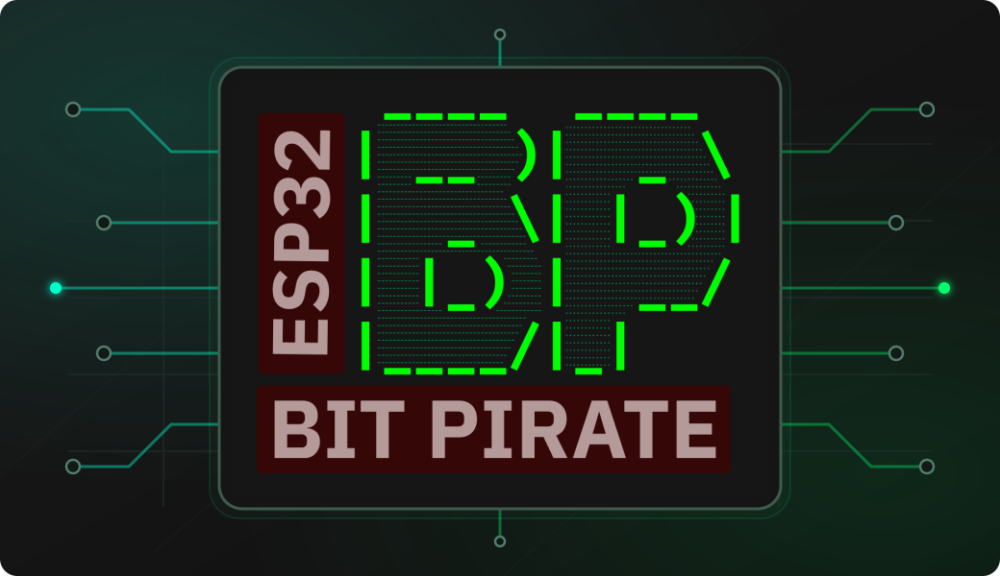
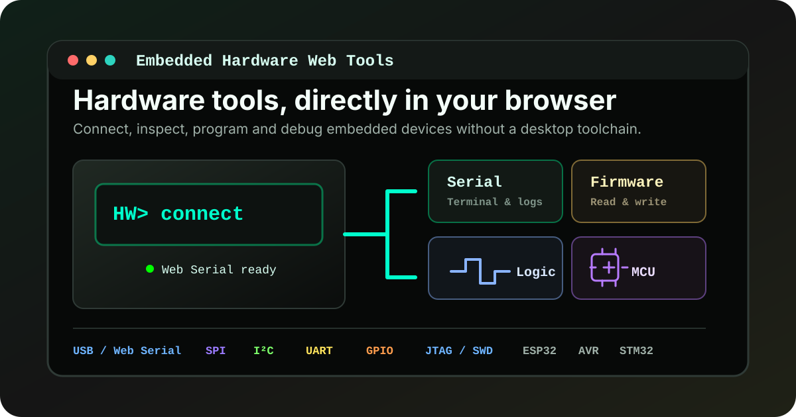
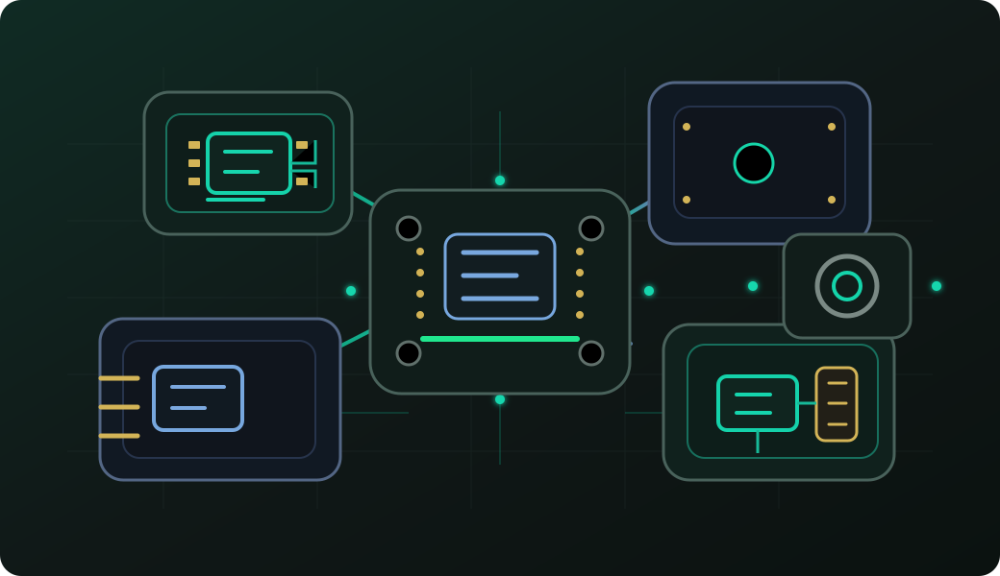
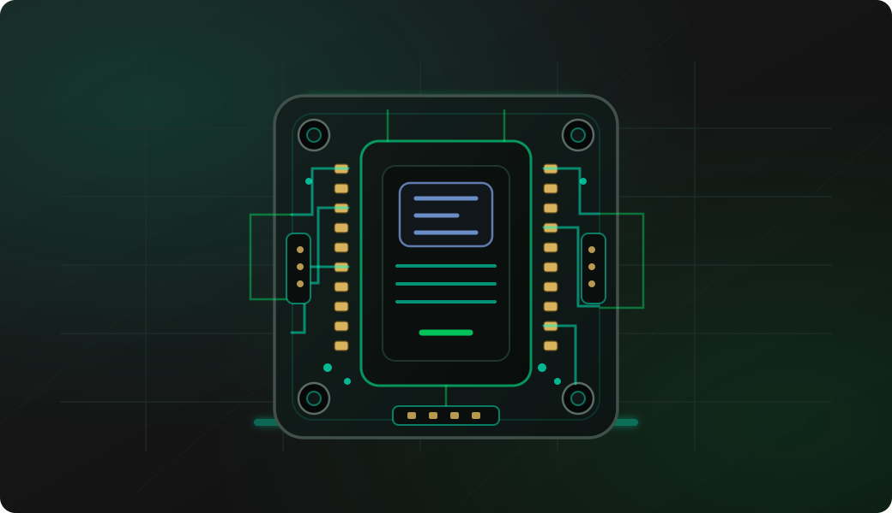
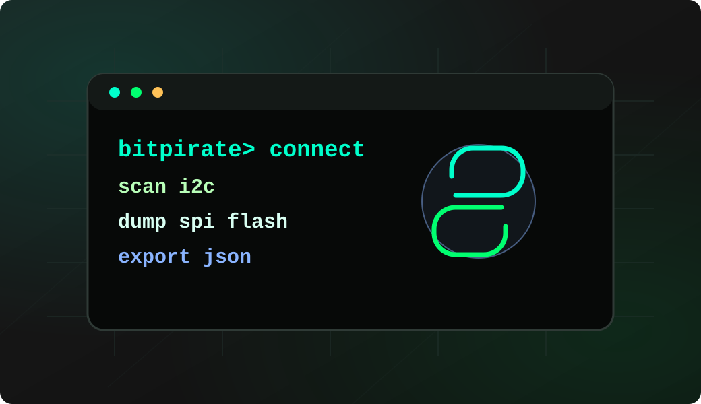
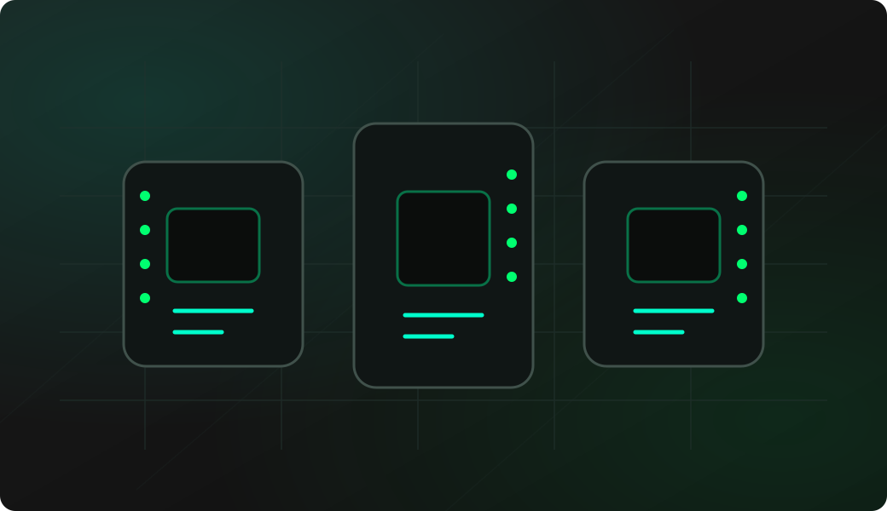

Dùng cáp USB truyền dữ liệu
Nhiều loại cáp chỉ có 2 lõi sạc nguồn sẽ không hiện cổng COM. Hãy chắc chắn bạn đang dùng cáp USB có đường truyền dữ liệu.
Trình nạp firmware qua trình duyệt
Cài đặt firmware ESP32 OmniBus lên các dòng bo mạch ESP32-S3 và ESP32-C5/C6 Bus Expander trực tiếp từ trình duyệt web. Quy trình tinh gọn: chọn bo mạch, nạp firmware, mở Web Serial terminal và làm theo hướng dẫn thực hành.

HƯỚNG DẪN TỪNG BƯỚC
CHỌN BO MẠCH
Cắm bo mạch vào máy tính qua cáp USB và chọn dòng firmware tương ứng bên dưới. Trình nạp sẽ hướng dẫn bạn từng bước.
Mọi bo mạch ESP32-S3 có ít nhất 4 MB Flash đều có thể chạy OmniBus với bản firmware S3 DevKit hoặc S3 Super Mini. Sơ đồ chân mặc định có thể khác nhau tùy bo mạch.
XÁC NHẬN CÀI ĐẶT
After the install, reconnect the board normally and open the terminal from the browser. Select USB Serial if the firmware asks for a terminal mode. It is the quickest way to confirm that the firmware booted and to start trying commands.
 Open Web Serial terminal →
Open Web Serial terminal →
> help
> mode i2c
> scan
> mode spi
> flash probeLearn and troubleshoot
The project keeps practical bench workflows and theoretical command references separate, so users can either follow a task or study a protocol mode in detail.

Recipes
Follow concrete workflows for wiring, commands, browser tools and repeatable hardware debugging tests.
Read recipes →
Wiki
Use the wiki for mode pages, command syntax, firmware setup notes and deeper protocol explanations.
Open wiki ↗LƯU Ý TRƯỚC KHI NẠP
Nhiều loại cáp chỉ có 2 lõi sạc nguồn sẽ không hiện cổng COM. Hãy chắc chắn bạn đang dùng cáp USB có đường truyền dữ liệu.
Một số bo mạch ESP32-S3 có 2 cổng Type-C (1 cổng USB-to-UART và 1 cổng Native USB). Chọn đúng cổng kết nối dùng để nạp.
Arduino IDE, PlatformIO, PuTTY hoặc các tab trình duyệt khác đang mở cổng Serial sẽ làm xung đột và khiến việc nạp bị lỗi.
MẸO VÀO BOOTLOADER
Sử dụng các hướng dẫn dưới đây nếu trình duyệt không tự nhận diện được thiết bị hoặc bo mạch không tự động chuyển sang chế độ nạp flash.
Tắt nguồn và rút cáp USB. Nhấn giữ phím G0, sau đó cắm cáp USB vào trong khi vẫn giữ phím.
Nhấn giữ nút BOOT trước khi cấp nguồn hoặc cắm cáp USB để bật chế độ nạp.
Cấp nguồn và nhấn giữ nút RESET trong 3 giây cho đến khi đèn LED nhấp nháy xanh lá.
Nhấn giữ nút POWER cho đến khi đèn LED nhấp nháy xanh lá để kích hoạt chế độ nạp.
Nhấn giữ nút giữa núm xoay (encoder), sau đó nhấn nút RESET. Với bản CC1101, nút nằm gần chip ESP32-S3.
Cắm vào cổng COM. Nhấn giữ nút BOOT, sau đó bấm nút RESET và thả nút BOOT.
Nhấn giữ nút BOOT trước khi cấp nguồn hoặc cắm USB để kích hoạt bootloader.
Nếu báo lỗi quyền truy cập cổng, chạy lệnh: sudo setfacl -m u:$USER:rw /dev/ttyACM0 (hoặc /dev/ttyUSB0).
GIẢI QUYẾT SỰ CỐ
Tổng hợp các sự cố thường gặp nhất khi sử dụng trình nạp firmware ESP32-S3 qua trình duyệt Web.
Hãy đảm bảo sử dụng trình duyệt trên máy tính (Chrome, Edge, Brave), cắm lại bo mạch, thử đổi dây cáp dữ liệu khác và tắt các phần mềm đang chiếm cổng COM (như Arduino IDE, PuTTY).
Hãy đưa bo mạch vào chế độ Bootloader thủ công (nhấn giữ BOOT → bấm RESET → nhả BOOT), kiểm tra chọn đúng phiên bản bo mạch rồi bấm Nạp lại.
Sau khi nạp xong, bạn cần bấm nút RESET trên bo mạch (hoặc rút cáp cắm lại) để vi điều khiển khởi động firmware mới, sau đó kết nối lại terminal với tốc độ 115200 baud.
Không lo hỏng mạch. Bạn chỉ cần đưa bo mạch vào chế độ Bootloader lại, chọn đúng tên bo mạch tương ứng và tiến hành nạp đè firmware mới.
After flashing, the same project gives you the firmware, browser tools, protocol recipes, documentation, scripts and companion hardware needed to explore buses, debug boards and automate repeatable bench workflows.

Firmware
C++ firmware for wired buses, wireless protocols, USB adapters, device shells and hardware debugging commands.
View source ↗
Web Tools
Desktop-style tools for Web Serial, SPI flash, AVR, STM32, ESP32, SUMP logic capture and BPIO2 GPIO/I2C/SPI.
Open tools →
Modules
Wiring guides for CC1101, SPI flash, PN532, nRF24L01, MCP2515 and other bench parts.
Explore modules →
Dock & adapters
A carrier-board direction for adapters, accessories and level logic from 1.8V to 5V.
Explore hardware →
Automation
Automate scans, protocol checks, captures, reports and repeatable lab tasks.
Open Python Scripting Lab →
Supported targets
Compare supported ESP32-S3 boards, pin exposure, onboard peripherals and board-specific workflow limits.
Compare boards →